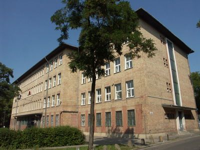

Budapest X. ker�lete, �sszefoglal� nev�n K�b�nya (n�met�l: Steinbruch) a f�v�ros pesti oldal�n elhelyezked� ker�let. A s�k ter�let v�rosk�p�b�l kiemelkedik a Szent L�szl�-templom Zsolnay-ker�mi�val fedett tornya. A lak�telepek mellett kertv�rosias �s szer�ny k�lv�rosias r�szek egyar�nt megtal�lhat�k a ker�letben. Budapest 1873-as l�trej�tte �ta a f�v�ros X. ker�lete. Kezdetben k�ls� ker�letnek sz�m�tott, 1950-ben azonban Nagy-Budapest l�trehoz�sa ut�n a v�ros m�rtani k�z�ppontja a ker�letbe ker�lt, eg�szen pontosan a Martinovics t�rre (Csajkovszkij park).
A ker�let neve az eg�szen a k�z�pkorig visszany�l� k�fejt�sre utal. A ter�let els� eml�t�se m�g K��rk�nt IV. B�la kir�ly 1244. �vi adom�nylevel�ben t�rt�nik, melyben az eml�tett ter�letet megm�vel�sre Pest v�ros�nak aj�nd�kozott. Ezen elnevez�s eml�k�t �rzi a K��r utca neve. A hely geol�giai adotts�gainak k�sz�nhet�en alakulhatott ki a k�b�ny�szat, a t�gla- �s cser�pgy�rt�s, valamint dombjai r�v�n a sz�l�termel�s.
K�b�nya ter�let�n m�r a 17. sz�zad elej�t�l intenz�v b�ny�szat folyt, a puszta 1661-t�l a fels�vattai Wattay (P�l P�l-Pilis-Solt v�rmegye helyettes alisp�nja) csal�d birtoka volt. A kitermel�st a gyarapod� Pest �p�t�anyag-ig�nye csak n�velt az id�k sor�n. A puszta oszm�n uralom al�li felszabad�t�sakor Wattay J�nos a v�ci j�r�s szolgab�r�jak�nt, a R�k�czi-szabads�gharc alatt a v�rmegye els� kuruc alisp�njak�nt ir�ny�totta K�b�nya �let�t. K�b�nyai alapanyagokb�l �p�lt a Magyar Tudom�nyos Akad�mia �p�lete, valamint az Egyetemi K�nyvt�r, �s a L�nch�d pill�reinek egy r�sze. 1890-ben a vesz�lyes b�ny�szat miatt besz�ntett�k e tev�kenys�get K�b�ny�n.
A k�fejt�s mellett a t�glagy�rt�s �s a sz�l�termeszt�s is vir�gzott K�b�ny�n a XIX. sz�zad derek�n. A pestiek kellemes kir�ndul�helynek tartott�k a korabeli K�b�ny�t, sz�p borvid�kkel. A pesti sz�l��ltetv�nyek 80%-a mai K�b�nya ter�let�n helyezkedett el. K�b�nya k�t sz�l�hegye az �- �s �j-hegy voltak. Az �-hegy legmagasabb pontj�n (148 m) �p�lt fel a romantikus st�lus� Cs�sztorony, a sz�l��ltetv�nyeken t�rt�nt gar�zd�lkod�sok megakad�lyoz�s�ra. Havas J�zsef, az �hegyi sz�l�kertek tulajdonosa 1859-ben eladta sz�l�j�t Perlmutter Jakabnak, akit�l Dr�her Antal 1862-ben vette meg a sz�l�t.
A hatalmas pincerendszerek, melyek a b�ny�szatb�l maradtak fent, seg�tett�k a helyi s�rgy�rt�s kialakul�s�t. A legnagyobb pincerendszer a K�r�si Csoma S�ndor �t �s a Kolozsv�ri utca tal�lkoz�s�n�l kezd�dik, s a teljes hossza k�r�lbel�l 33 km.
Az 1800-as �vekt�l kezdve sz�mos gy�r l�tes�lt K�b�ny�n. Itt �p�lt egykoron Sz�chenyi Istv�n malma is. Az 1838-as nagy pesti �rvizet k�vet�en j�tt l�tre a K�sz�nb�nya �s T�glagy�r T�rsulat Pesten, vagyis a Drasche-t�glagy�r. Az els� k�b�nyai s�rgy�rak 1850-es �vekben j�ttek l�tre. Ekkor kezdte meg m�k�d�s�t a K�b�nyai Serh�z T�rsas�g, a Perlmutter, a Barber �s a Klusemann-f�le s�rf�z�.
Az 1950. janu�r 1-�n l�trej�tt Nagy-Budapest �s K�b�nya a v�ros bels� ker�let�v� v�lt, ide ker�lt Budapest m�rtani k�z�ppontja is. Ezzel egyidej�leg a r�gi ker�letek hat�rai is megv�ltoztak kisebb-nagyobb m�rt�kben, ekkor csatolt�k �t a X. ker�lett�l a Hung�ria k�r�tt�l nyugatra es� ter�letet a VIII. ker�lethez.
